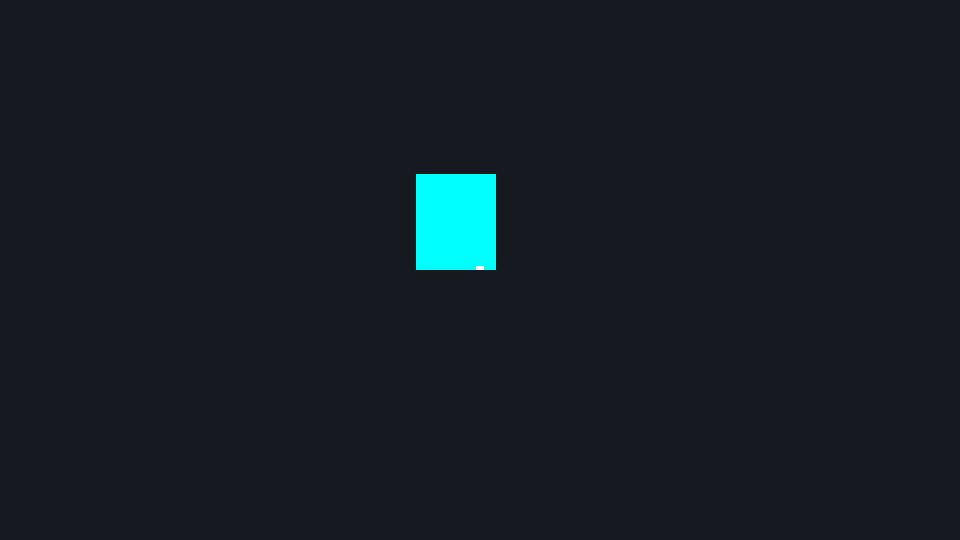
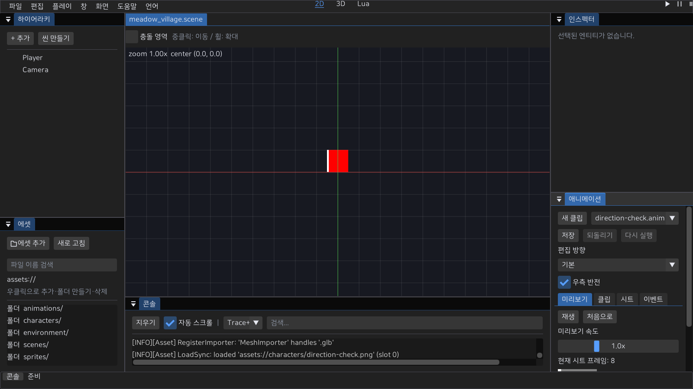

2D 캐릭터 모션
한 .anim에 기본 클립과 8방향 클립을 작성하고, 대기·걷기 모션에 연결한다. main 소스의 에디터 Play·MyGame·인증 온라인 MyGame이 같은 방향 해석을 사용한다. 기존 단일 클립 파일은 그대로 읽는다. 아래 방향별 저장 기능은 배포된 0.3.0의 지원 범위가 아니다.
연결 방법
- 외부 도구에서 만든 PNG를 가져오고 애니메이션 패널의 시트 탭에서 프레임 영역·발 피벗을 지정한다. 그림 제작·리깅은 외부에서 수행한다.
- 편집 방향에서 기본 또는 방향을 선택한다. 클립 추가는 기본 타임라인을 복사하고, 클립 제거는 해당 방향을 비운다. 방향을 선택하는 것만으로 에셋은 변경되지 않는다.
- 선택한 클립의 미리보기에서 프레임 순서·표시 시간, 클립에서 이름·반복·재생 방향, 이벤트에서 마커를 편집한다. 미지정 방향은 대체 결과를 미리 보여주며 직접 편집은 클립 추가 후 가능하다.
.anim을 저장하고SpriteAnimator.animation과CharacterController2D.idleAnimation·walkAnimation에 연결한다. 기존.metaGUID와 문서 Undo·Redo를 사용한다.- 씬을 저장하고 Play한다. 정지하면 대기, 실제 이동량이 한 틱에 0.000001 월드 단위보다 크면 걷기를 요청한다. 속도가 낮아도 같은 기준을 사용한다.
- 비반복 클립의 후속 모션은 완료 뒤 다음 고정 틱에서 재생한다. 같은 이동 상태는 매 틱 시작 클립을 다시 요청하지 않는다. 대기·걷기에 서로 다른 에셋을 연결하면 걷기→정지→걷기는 새로운 요청이므로 처음부터 시작한다.
시트와 프레임 영역은 모든 방향이 공유한다. 시트 교체·그리드 재생성은 프레임 인덱스가 바뀌므로 타임라인·이벤트·방향 클립과 반전 설정을 초기화한다. 패널에서 이유를 안내하며 Undo로 되돌릴 수 있다. 피벗 수정은 같은 시트 프레임을 사용하는 모든 클립에 적용된다. 그림을 자동 생성하거나 사용자 원본을 변경하지 않는다.
방향 선택과 대체 규칙
직접 지정한 방향 클립 → 선택적으로 좌측 클립 반전 → 기본 클립 순서다. 우측 반전을 켜도 명시적인 우측 클립이 우선한다. 반전 대상인 좌측 클립도 비어 있으면 기본 클립을 반전 없이 사용한다. 기본 클립은 항상 필요하다.
| 인덱스 | 저장 키 | 우측 반전 시 대체 |
|---|---|---|
| 0 | down | 기본 대체만 |
| 1 | down_left | 기본 대체만 |
| 2 | left | 기본 대체만 |
| 3 | up_left | 기본 대체만 |
| 4 | up | 기본 대체만 |
| 5 | up_right | up_left |
| 6 | right | left |
| 7 | down_right | down_left |
이동 입력은 방향을, 실제 충돌 후 이동량은 대기·걷기를 결정한다. 벽에 막혀도 벽 쪽을 바라볼 수 있고 입력을 놓으면 마지막 방향을 유지한다. 인증 온라인은 서버/예측의 facingRadians를 같은 8방향으로 변환한다. 로컬은 검증된 이동 입력을 사용한다. +Y up·발 피벗·48 PPU 계약은 유지한다.
로컬 Lua의 entity:facing_index()·facing_vector()는 현재 방향을 읽는다. face_move(Vec2)는 직접 방향을 지정한다. 활성 캐릭터 조작은 비영 이동 입력이 있는 틱의 후반에 방향을 갱신하므로 on_update는 이전 완료 틱의 결과를 읽는다.
파일과 오류
버전 1은 기본 클립만, 버전 2는 기본 클립과 선택적 방향 클립을 저장한다. 방향 클립이나 우측 반전이 없으면 저장 결과는 버전 1이다. 버전 2에는 directions 객체와 mirrorRight 불리언이 필요하다. 방향은 위 표의 키로만 지정하며 누락은 대체 규칙을 뜻한다. null이나 임의 방향 이름을 넣지 않는다. 루트의 기존 texture, width, height, frames, 기본 클립 필드와 선택적 nextAnimation은 유지한다.
각 방향 값은 아래처럼 같은 시트의 프레임 인덱스를 사용한다. 별도 텍스처·중첩 방향 객체·방향마다 후속 에셋을 지정하지 않는다. direction은 바라보는 방향 키와 별개인 재생 순서(0 정방향, 1 역방향, 2 왕복)다.
"directions": {
"left": {
"name": "walk_left", "loop": true, "direction": 0,
"timeline": [{"frame": 2, "seconds": 0.15}], "events": []
}
},
"mirrorRight": true시트·각 타임라인은 1~4096 프레임, 이벤트는 최대 4096개다. 표시 시간은 유한한 0.001~60초, 인덱스와 마커 위치는 각 범위 안이어야 한다. 잘못된 버전·방향·타입·참조·시간은 저장/로드에서 거부한다. 편집 중의 미완성 데이터는 저장할 수 없으며 씬에 지정하면 오류를 설명한다. 에디터의 바인딩 실패는 하단 오류로 전달하고 Play를 중단한다. 자동 실행은 MyGame과 마찬가지로 실패 종료한다. 저장 실패는 기존 파일과 .meta를 보존한다.
공통 JSON 파서의 중복 키는 마지막 값을 사용한다. 이 형식 검증이 원본 JSON의 중복 키를 거부한다고 주장하지 않는다.
진행률과 발 피벗
방향을 바꿔도 전체 재생 시간의 진행률과 일시정지를 유지한다. 프레임 번호 대신 논리 재생 주기의 경과 시간 비율을 사용한다. 1초 클립의 40% 위치에서 0.5초 클립으로 바꾸면 0.2초 위치를 표시한다. 역재생과 왕복은 실제 논리 순서·각 프레임 시간으로 계산한다. 같은 좌측 클립을 우측 반전으로 표시할 때는 재생 위치를 그대로 사용한다.
비반복 모션이 완료된 뒤 방향만 바꾸면 대상 클립의 논리 마지막 프레임에 머문다. 대상이 반복 클립이어도 완료 상태는 유지한다. 별도 에셋 요청·후속 모션은 새 재생이며 기존 첫 이벤트 규칙을 따른다. 메모리 상태 머신의 keepPhase는 같은 시간 비율을 사용하되 완료 후 새 상태에 진입하면 처음부터 시작한다. 공격·피격·사망 상태를 에디터에서 작성하는 기능은 아직 연결되지 않았다.
애니메이션 패널의 편집 방향 선택도 재생 위치·일시정지를 유지한다. 처음부터 보려면 처음으로를 누른다. 타임라인 수정·Undo·시트 교체처럼 클립 데이터가 바뀌면 미리보기 커서를 초기화한다. 화면 샘플은 새 방향의 보정 위치만 보여주고 고정 틱 커서·이벤트 이력을 변경하지 않는다.
반전된 이미지도 원본 프레임의 발 피벗이 같은 월드 위치에 오도록 사각형을 보정한다. x 반전은 너비−pivotX, y 반전은 높이−pivotY를 사용하며 렌더·에디터 선택 경계가 같은 계산을 사용한다. PPU·월드 앵커·깊이 계약은 유지한다.

고정 틱과 이벤트
첫 프레임과 이후 진입 프레임의 마커는 고정 틱에서 on_event("animation", payload)로 전달한다. 에셋 바인딩·정지/일시정지 화면의 표시는 커서·상태 전이·트리거·첫 이벤트를 소비하지 않는다. 반복 렌더로 이벤트가 사라지거나 재발행되면 결함이다. 인증 온라인 클라이언트에는 로컬 Lua가 실행되지 않으며 표현 이벤트를 권위 피해·보상으로 사용하지 않는다.
방향 보정은 이벤트 없이 위치만 옮긴다. 새 방향의 처음부터 보정 위치까지 마커를 재생하거나 현재 마커를 재발행하지 않는다. 이후 고정 틱에서 실제로 경계를 넘은 마커만 발행한다. 방향 선택과 행동 상태 진입은 다른 동작이다.
현재 검증과 다음 작업
기존 테스트에 버전 1/2 왕복·잘못된 방향/타입/시간/프레임/이벤트, 값 복사와 대체/반전, 기존 GUID·저장 실패 보존·Undo·Redo, 실제 ImGui 방향 선택/추가/제거/저장을 남겼다. tools/verify-animation2d.ps1 -Configuration Debug 또는 Release는 build/ 아래 새 프로젝트와 진단 시트를 만든다. 실제 MyGame의 8방향·정지·직접/반전/기본 대체 픽셀, 에디터 패널·Play, 손상 파일 거부, 두 인증 클라이언트의 로컬/원격 방향 픽셀과 Lua 격리를 검사한다. 단색 시트는 해석을 확인하기 위한 자료이며 고화질 게임 아트 승인이나 장치 입력의 증거가 아니다.
-Phase를 추가하면 길이가 다른 정방향·역방향·왕복의 로컬 재생 입력 접두사, 무음 보정/실제 마커, 크기·피벗이 다른 프레임의 발 픽셀, 완료된 Play·인증 온라인 전환 결과를 검사한다. 각 온라인 접두사는 새 접속에서 실행하며 완료 상태의 끝 프레임을 확인한다. 재생 도중 연속 온라인 전환의 시간별 픽셀·일시정지 검증은 남았다. 클라이언트 모션은 로컬 표현 시간이며 서버가 복제하는 공통 애니메이션 시계가 아니다.
다음은 재생 도중 두 온라인 클라이언트의 연속 전환/시간별 픽셀 검증(D08c2), 이후 공격·피격·사망의 작성/입력/중단 전환(D08d)이다. 권위 전투·피해는 D16에서 연결한다. 실제 장치·전체 키보드 탐색·모니터 DPI, 게임 규칙·맵·HUD·운영 보호·완성 게임 배포는 별도 조건이다. 작업 목록, Lua API, 컴포넌트, 근거 기록을 함께 확인한다.

기존 걷기 클립 GIF·영상
같은 위치에서 렌더한 기존 단일 걷기 클립입니다. 8방향 전환이나 직접 장치 입력의 증거가 아닙니다.